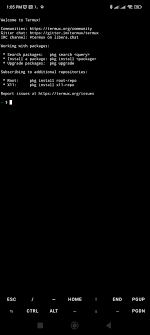

Cara Install APK Termux di Android (Disertai Gambar dan Link Download)
Termux adalah aplikasi terminal Linux di Android yang sangat powerful. Karena tidak tersedia di Play Store versi terbaru, kamu perlu menginstalnya lewat file APK. Ikuti langkah-langkah berikut:
Langkah 1: Download Termux dari F-Droid
Download file APK dari situs resmi F-Droid agar aman dan versi terbaru:

Langkah 2: Aktifkan Sumber Tidak Dikenal
Sebelum install APK, aktifkan dulu opsi pemasangan dari sumber tidak dikenal:
- Buka Pengaturan > Keamanan
- Aktifkan Sumber Tidak Dikenal

Langkah 3: Install APK Termux
Setelah selesai diunduh, buka file APK lalu klik Install.
Langkah 4: Jalankan Termux
Jika sudah terinstal, buka aplikasi Termux. Kamu akan melihat tampilan terminal seperti ini:
Tips Tambahan
Setelah berhasil install, kamu bisa update dan install paket penting dengan perintah ini:
pkg update && pkg upgrade
pkg install git curl wgetPenutup
Sekarang kamu sudah bisa menggunakan Termux di Android untuk belajar Linux, coding, atau automasi Android. Jangan lupa gunakan versi resmi agar aman dari malware!